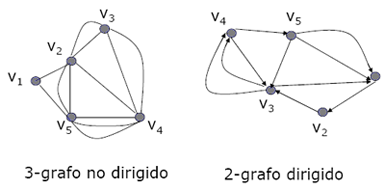

La matriz del grafo, cuando ejecutamos el algoritmo de Hielholzer, es una matriz de multiplicidades, para más información consulta en la ayuda el apartado de Matriz del grafo.
G=(V,E) es un s-grafo si es un multigrafo donde el mayor número de aristas (respectivamente arcos) entre dos vértices es s.
NOTA: Un multigrafo es un grafo en el que se admiten aristas/arcos múltiples entre dos vértices dados.
Ejemplos:

Sea G=(V,E) un s-grafo:
Se llama cadena euleriana en G a toda cadena en G que pase por todas y cada una de sus aristas (respectivamente arcos) una sola vez.
Se llama ciclo euleriano en G a toda cadena euleriana cerrada.
Un grafo G se dice que es euleriano si posee un ciclo euleriano.
Sea G un s-grafo no dirigido, conexo:
G es euleriano si y sólo si todos los vértices tienen grado par.
G tiene cadena euleriana no cerrada si y sólo si G tiene exactamente dos vértices de grado impar (que serán los extremos de la cadena).
Teorema:
Sea G un s-grafo no dirigido, conexo:
G es euleriano si y sólo si se puede expresar como unión de ciclos aristodisjuntos.
Sea G un s-grafo dirigido, débil conexo:
G es euleriano si y sólo si todos los vértices tienen el mismo grado de entrada que de salida.
G tiene cadena euleriana no cerrada si y sólo si existen dos vértices u y v tal que
a) de(u) = ds(u) + 1 y ds(v) = de(v) + 1 y
b) todos los vértices distintos de u y de v tienen el mismo grado de entrada y salida.
Sea G un s-grafo dirigido, débil conexo:
G es euleriano si y sólo si se puede expresar como unión de ciclos aristodisjuntos.
Para obtener un ciclo euleriano tanto en grafos no dirigidos como en grafos dirigidos, podemos utilizar diferentes algoritmos. En esta aplicación, se ha implementado el algoritmo de Hierholzer.
Válido tanto para grafos dirigidos como no dirigidos.
1.- Se fija un vértice v y se busca una cadena cerrada en la que esté contenido. Para ello se construye una cadena a partir de v añadiendo aristas/arcos hasta que volvamos a v otra vez. (Ninguna arista/arco se puede añadir más de una vez).
Si no quedan más aristas/arcos hemos terminado.
2.- Si quedan más, tomamos un vértice del ciclo existente adyacente a aristas/Arcos no considerados, por ejemplo w, y seguimos añadiendo aristas/arcos como antes hasta que lleguemos nuevamente a w.
3.- Las aristas/arcos del ciclo hallado a partir de w se intercalan en el ciclo anterior en la posición que ocupaba w. Si no quedan más aristas/arcos por añadir hemos terminado; si no es así, entonces volvemos nuevamente al paso 2.